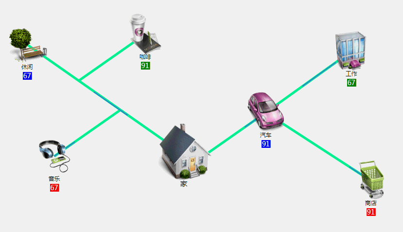
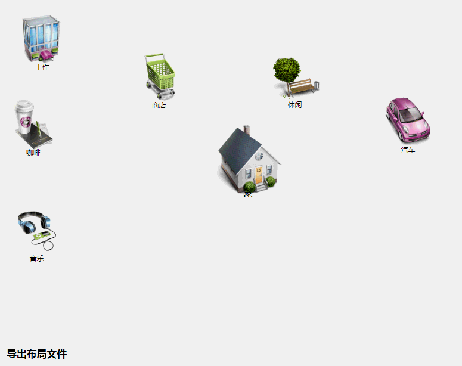

此文章为原创文章，原文地址：https://www.cnblogs.com/eagle1098/p/11431679.html

连线动画图

编辑器
效果如上图所示。
本项目使用主要d3.jsv4制作，分两部分，一个是实际展示的连线动画图，另一个是管理人员使用鼠标编辑连线的页面。对于d3.js如何引入图片，如何画线等基础功能，这里就不再介绍了，大家可以找一些入门文章看一下。这里主要介绍一下重点问题。
此图的主要功能是每隔给定时间，通过ajax请求后台数据，并根据返回的数据动态改变每个图片下方的数值，动态改变连线上的动画流动方向和是否流动。
首先，确定图表中需要配置的内容，如各图片存储位置，连线和动画颜色，图片和连线的坐标等。这些数据需要在html中进行配置，最好写成object对象，赋值给我们自己的图表类的函数。比如：
1 var data = {
2 element:[{
3 image: 'img/work.png',
4 pos:[1,1], // 图片位置
5 linePoint:[], // 图片发出线段坐标数组
6 lineDir:0, // 线段动画方向
7 title: '工作'
8 }],
9 lineColor:'black', // 连线颜色
10 animateColor: 'red', // 动画颜色
11 };
12 var chart = new Myd3chart('#chart');
13 chart.lineChart(data);其中图片发出的线段坐标数组，使用外部文件提供，此文件由之后介绍的编辑器生成。
在设计我们自己的图表函数时，最好把每个功能划分成独立的函数，这样方便以后的维护和扩展。
动画线段采用css的方式，有动画的线段添加此css即可：
1 .animate-line{
2 fill: none;
3 stroke-width: 1;
4 stroke-dasharray: 50 100;
5 stroke-dashoffset: 0;
6 animation: stroke 6s infinite linear;
7 }
8 @keyframes stroke {
9 100% {
10 stroke-dashoffset: 500; /* 如果反向移动改为-500 */
11 }
12 }这个图表的难点在于动态改变连线上的流动动画，因为A线段的终点会连接到B线段上，如果B线段动画停止，则A线段上的动画仍然要从B上经过，而不能简单停止B线段上的动画。而且如果B线段上的接入点不止一个，还要判断接入点之间的顺序，只显示最靠近B起始点的接入点的动画。另外还要判断接入线段上是否有接入线段，层级关系里面如果有1个线段有动画，则此接入点就有动画流出。（这里说起来有点绕）
我的方法是：
1）统计每个线段上的所有接入点，这里就是图片名称，用于判断此线段是否有动画流出。
2）接收后台传来的数据时，判断每个线段是否有动画，如果有动画，则直接恢复其动画线段的起始点坐标；如果没有动画，则判断最靠近起始点的接入点是否有动画，如果有动画则将动画线段的起始点改为此接入点坐标。
1 // 统计接入点
2 function findAccessPoint() {
3 var accessPoints = [];
4 // 记录每个线段上的接入点，data为配置数据
5 data.eles.forEach(function(d, i){
6 if(d.line.length == 0){
7 return;
8 }
9 var acsp = {
10 name: d.title.text,
11 ap: [], // 接入点,按顺序排列，头部离开始点近
12 };
13 // 本线段上，每两相邻的点作为一个元素存入数组
14 var linePair = [];
15 // 本线段起始点
16 var startPos = d.line[0];
17 d.line.forEach(function(dd, di){
18 if(d.line[di+1]){
19 var pair = {
20 start: dd,
21 end: d.line[di+1]
22 };
23 linePair.push(pair);
24 }
25 });
26 // 对每两相邻的点，查找接入点
27 linePair.forEach(function(dd, di){
28 chartData.eles.forEach(function(ddd, ddi){
29 // 排除自己，查找自己线段上的接入点
30 if(i != ddi && ddd.line.length > 1){
31 // 得到此线段终点
32 var pos = ddd.line[ddd.line.length - 1];
33 // dd.start开始点,dd.end结束点
34 // 用x坐标计算在本线段上的y坐标，再和实际的y坐标比较
35 var computeY = dd.start[1] +
36 (pos[0] - dd.start[0])*(dd.end[1] - dd.start[1])/(dd.end[0] - dd.start[0]);
37 var dif = Math.abs(computeY - pos[1]);
38 // 如果误差在2以内，并且此线终点在当前线起点和终点之间
39 // 认为此点为接入点
40 if(dif < 2 && (
41 (
42 ((pos[0] > dd.start[0]) && (pos[0] < dd.end[0])) ||
43 ((pos[0] < dd.start[0]) && (pos[0] > dd.end[0]))
44 ) && (
45 ((pos[1] > dd.start[1]) && (pos[1] < dd.end[1])) ||
46 ((pos[1] < dd.start[1]) && (pos[1] > dd.end[1]))
47 )
48 )) {
49 var dis = Math.pow((pos[0] - startPos[0]),2) + Math.pow((pos[1] - startPos[1]),2);
50 var ap = {
51 name: ddd.title.text,
52 ap: pos,
53 distance: dis, // 距离起始点的距离
54 allNames: [], // 所有通过此接入点的站点名称
55 }
56 acsp.ap.push(ap);
57 }
58 }
59 });
60 })
61 accessPoints.push(acsp);
62 });
63
64 //对所有的接入点，按与起始点的距离排序，并查找此接入点的上层站点
65 accessPoints.forEach(function(d, i){
66 // 按distance由小到大排序
67 d.ap.sort(function(a, b){
68 return a.distance - b.distance;
69 });
70 // 查找每个接入点的上层站点
71 d.ap.forEach(function(dd, di){
72 findPoint(dd.name, dd.allNames);
73 });
74 });
75 // name是接入点名称，arr是该接入点的allNames
76 function findPoint(name, arr){
77 accessPoints.forEach(function(d, i){
78 // 在数组中找到指定名称的项
79 if(d.name === name){
80 if(d.ap.length>0){
81 // 把该项下面的ap中的名称加入给定arr
82 d.ap.forEach(function(dd, di){
83 arr.push(dd.name);
84 // 如果该点内的allNames已经有值则直接加入
85 if(dd.allNames.length>0){
86 dd.allNames.forEach(function(d, i){
87 arr.push(d);
88 });
89 } else{
90 // 递归查找子接入点
91 findPoint(dd.name, arr);
92 }
93 });
94 } else {
95 return;
96 }
97 }else{
98 return;
99 }
100 });
101 }
102 }以上函数的运行结果会产生一个对象，存储每个接入线段上‘挂载’的接入点，目的就是改变动画时方便判断。
1 // 更新线条动画
2 aniLine.each(function(d, i){
3 var curLine = d3.select(this);
4 // 找到对应的动画line
5 if (dd.name === curLine.attr('tag')) {
6 // 处理动画是否运行
7 if (dd.ani) {
8 // 此线条动画运行
9 curLine.style('animation-play-state', 'running');
10 curLine.style('display', 'inline');
11 // 如果动画运行，则恢复原始动画路径
12 curLine.attr('d', function(d){
13 return line(chartData.eles[i].line);
14 });
15 } else {
16 // 此线条动画停止
17 // 先查找离本线段开始点最近的接入点
18 var acp = accessPoints;
19 // 从accessPoints中找到本节点的接入点集合
20 var ap = [];
21 acp.forEach(function(acd, aci){
22 if(acd.name === dd.name){
23 ap = acd.ap;
24 }
25 });
26 // 最近有动画接入点序号
27 var acIndex = -1;
28 // 找到最近的有动画接入点，远近按数组序号递增
29 for(var j=0;j<ap.length;j++){
30 // 复制所有子接入点数组
31 var allNames = ap[j].allNames.concat();
32 // 将接入点名称也加入
33 allNames.push(ap[j].name);
34 // 判断此接入点树中是否有动画，如果1个有就可以
35 allNames.forEach(function(name,ani){
36 data.forEach(function(datad, datai){
37 if(datad.name === name){
38 if(datad.ani){
39 acIndex = j;
40 return;
41 }
42 }
43 });
44 });
45 if(acIndex != -1) {
46 break;
47 }
48 }
49 // 如果存在有动画接入点
50 if(acIndex != -1){
51 curLine.style('animation-play-state', 'running');
52 curLine.style('display', 'inline');
53 curLine.attr('d', function(d){
54 var accp = ap[acIndex].ap;
55 var curLine = data.element[i].line.concat();
56 // 接入节点与开始点的距离
57 var disAp = Math.pow((accp[0] - curLine[0][0]),2) +
58 Math.pow((accp[1] - curLine[0][1]),2);
59 // 如果当前线段中有离开始节点比接入点近的节点
60 // 则删除此节点
61 curLine.forEach(function(curld, curli){
62 if(curli > 0){
63 var dis = Math.pow((curld[0] - curLine[0][0]),2) +
64 Math.pow((curld[1] - curLine[0][1]),2);
65 if(dis < disAp){
66 // 删除此点
67 curLine.splice(curli,1);
68 }
69 }
70 });
71 // 从此接入点处开始动画
72 curLine.splice(0,1,accp);
73 // debugger;
74 return line(curLine);
75 });
76 }else{
77 // 此线条动画停止
78 curLine.style('animation-play-state', 'paused');
79 curLine.style('display', 'none');
80 }
81 }
82 }由于本图表需要配置大量坐标，如果手动填写的话效率十分低下，所以需要开发一个编辑器用来修改图表。
编辑器的主要使用方法为，使用鼠标拖动图标，双击确定起始位置并开始实时画线状态，随着鼠标移动动态画出线段，单击确定临时终点，再单击确定下一个终点，右击结束动态画线状态。如果鼠标单击其他图标，则终点为该图标的起始坐标。本程序的实时画线部分进行了倾斜的约束，即左倾或右倾30度角。
编辑器比展示图要简单一些，复杂部分在事件处理。
1 // 拖动图标
2 var draging = d3.drag()
3 .on('drag', function () {
4 // 当长宽相同时,iconSize是图标大小[宽，高]
5 var move = iconSize[0] / 2,
6 moveSubBg = [25, 53.5], moveTitle = [25, 50];
7 var g = d3.select(this),
8 eventX = d3.event.x - move,
9 eventY = d3.event.y - move;
10 // 设定图标位置
11 g.select('.image')
12 .attr('x', eventX)
13 .attr('y', eventY);
14 })
15 // 拖拽结束
16 .on('end', function () {
17 var g = d3.select(this);
18 g.select('.subBg')
19 .attr('transform', function (d, i) {
20 // 对子标签的处理，自动符合字符串长度
21 var x = parseFloat(d3.select(this).attr('x')) + parseFloat(d3.select(this).attr('width')) / 2,
22 // y没被缩放，所以不用处理
23 y = d3.select(this).attr('y'),
24 dsl = (d.title.subTitle.text + '').length;
25 var scaleX = dsl * 5.5;
26 return 'translate(' + x + ' ' + y + ') scale(' + scaleX + ', 1) translate(' + -x + ' ' + -y + ')';
27 });
28 });
29 // 图标组增加拖动事件
30 imageGs.call(draging);以上拖动事件，只是调用基本方法。
实时画线功能需要提前定义临时存储对象，用来存储鼠标移动时线段的终点坐标。
1 // 鼠标移动时，实时画线到鼠标当前位置，_bodyRect为主区域
2 _bodyRect.on('mousemove', function(){
3 // 如果不处于实时画线状态
4 if(!_chartData.drawing){
5 return;
6 }
7 // 如果没有端点名称
8 if (!_chartData.linePrePare.name) {
9 return;
10 }
11 /* 实时画线 */
12 // 判断线段倾斜方向,linePrePare为线段临时存储
13 var preLines = linePrePare.lines;
14 var mousePos = d3.mouse(_bodyRect.node()),
15 beforePos = preLines[preLines.length - 1], newy,
16 newPos = [];
17 if((mousePos[0]>beforePos[0] && mousePos[1]>beforePos[1]) || (mousePos[0]<beforePos[0] && mousePos[1]<beforePos[1])){
18 // 向左倾斜\ 左上到右下：y = cy + 0.7*(x-cx)
19 newy = beforePos[1] + 0.7 * (mousePos[0] - beforePos[0]);
20 } else {
21 // 向右倾斜/ 左下到右上：y = cy - 0.7*(cx-x)
22 newy = beforePos[1] - 0.7 * (mousePos[0] - beforePos[0]);
23 }
24 newPos = [mousePos[0], newy];
25 // 移除旧线
26 if(_chartData.tempLine.line){
27 _chartData.tempLine.pos = [];
28 _chartData.tempLine.line.remove();
29 }
30 // 画新线，tempLine为实时画线的临时存储
31 _chartData.tempLine.line = _chartData.lineRootG.append('path')
32 .attr('class', 'line-path')
33 .attr('stroke', chartData.line.color)
34 .attr('stroke-width', chartData.line.width)
35 .attr('fill', 'none')
36 .attr('d', function () {
37 var newLine = [
38 preLines[preLines.length - 1],
39 newPos
40 ];
41 _chartData.tempLine.pos = newPos;
42 return line(newLine);
43 });
44
45 // 当鼠标移入某个建筑图标范围时
46 _chartData.imageGs.on('mouseenter', function(d, i){
47 // 移除旧线
48 if(_chartData.tempLine.line){
49 _chartData.tempLine.pos = [];
50 _chartData.tempLine.line.remove();
51 }
52 // 得到图标中心点坐标
53 var posX = parseFloat(d3.select(this).select('.image').attr('x')) + _chartConf.baseSize[0] / 2;
54 var posY = parseFloat(d3.select(this).select('.image').attr('y')) + _chartConf.baseSize[1] / 2;
55 // 将此建筑图标的中心点坐标作为终点坐标画线
56 _chartData.tempLine.line = _chartData.lineRootG.append('path')
57 .attr('class', 'line-path')
58 .attr('stroke', chartData.line.color)
59 .attr('stroke-width', chartData.line.width)
60 .attr('fill', 'none')
61 .attr('d', function () {
62 var newLine = [
63 preLines[preLines.length - 1],
64 [posX,posY]
65 ];
66 _chartData.tempLine.pos = [posX,posY];
67 return line(newLine);
68 });
69 });
70 // 当鼠标移出图标区域
71 _chartData.imageGs.on('mouseleave', function(d, i){
72 // 移除旧线
73 if(_chartData.tempLine.line){
74 _chartData.tempLine.pos = [];
75 _chartData.tempLine.line.remove();
76 }
77 });
78 // 对图标单击鼠标，保存线
79 _chartData.imageGs.on('click', function (d, i) {
80 // 保存临时线
81 drawLine();
82 // 停止实时画线
83 exitDrawing();
84 });
85 });
86 // 点击鼠标右键,停止实时画线
87 _bodyRect.on('contextmenu', function(){
88 // 停止实时画线
89 exitDrawing();
90 d3.event.preventDefault();
91 });
92 });
93 }在此只贴出部分代码，如果大家有任何建议和问题，还请留言，谢谢。